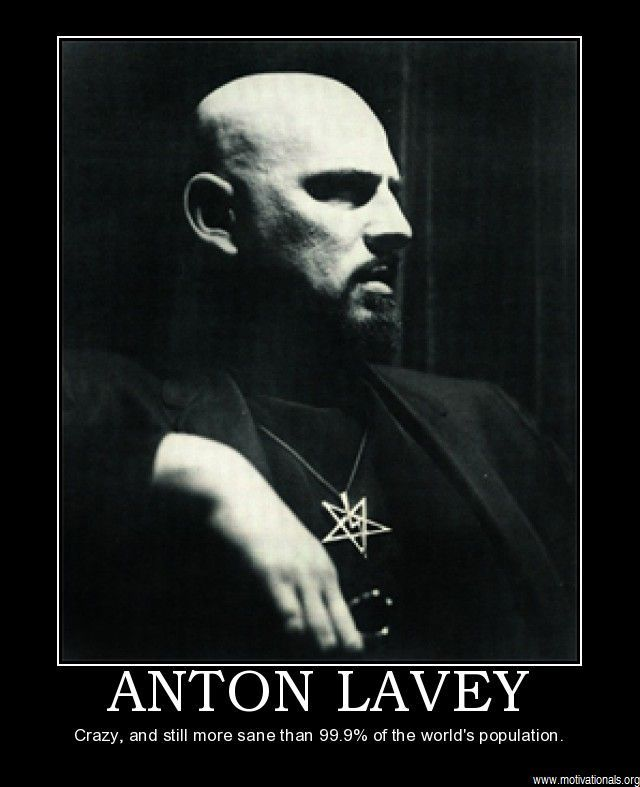

Warrax
Ad usum externum Liber VI: Наследие ЛаВея
Специально для "Сатанинской Азбуки"

Отношение к Антону Шандору ЛаВею у многих сатанистов неоднозначное — для кого-то он слишком материалистичен, для кого-то не понятно, что он имеет в виду под магией и зачем это надо, для кого-то он — слишком американец, кто-то с упорством ищет у него еврейские корни...
Я не буду ни нападать на ЛаВея, ни защищать его; я лишь указываю на факт, что он был первым, кто открыто называл себя сатанистом до самой смерти, а не просто для временного эпатажа обывателей, и заслуживает уважения за одно лишь это.
Подробно разбирать его книги не имеет смысла — та же «Сатанинская Библия» писалась в спешке для издателя, о чём писал сам ЛаВей, да и, в конце концов, «здесь вы найдёте правду и фантазию». Но для проекта «Сатанинская Азбука» имеет смысл разобрать «азбучное»: девять заповедей и одиннадцать правил. На них в первую очередь обращают внимание — написано коротко и с чёткими формулировками, при этом их обычно понимают весьма поверхностно и криво, в меру своего уровня развития и отсутствия «сатанинской направляющей».
Пример типичного заявления: ага, у вас тоже заповеди, как и в христианстве! Однако религиозная заповедь — это commandment: приказ, предписание, директива (синоним: injunction). У ЛаВея же написано: The nine satanic statements. Statement — это заявление, утверждение, формулировка, предписание, высказывание. Как видите: никакого религиозного оттенка нет, можно вообще перевести как «Девять сатанинских тезисов».
Sub figura 1: Девять сатанинских тезисов:
- Satan represents indulgence, instead of abstinence! = Познай свою суть!
- Satan represents vital existence, instead of spiritual pipe dreams! = Жизненная суть.
- Satan represents undefiled wisdom instead of hypocritical self-deceit! = Будь честен с собой.
- Satan represents kindness to those who deserve it instead of love wasted on ingrates! = За взаимные отношения.
- Satan represents vengeance instead of turning the other cheek! = Врагов надо устранять эффективно.
- Satan represents responsibility to the responsible instead of concern for others = Против паразитизма
- Satan represents man as just another animal (sometimes better, more often worse than those that walk on all fours), who, because of his “divine spiritual and intellectual development”, has become the most vicious animal of all = не рационализируйте «духовность»!
- Satan represents all of the so-called sins, as they all lead to physical, mental, or emotional gratification = Получайте удовольствие от так называемых «грехов», не будьте ханжой
- Satan has been the best friend the Church has ever had, as He has kept it in business all these years! = Сатанизм заявляет о себе как о самостоятельном мировоззрении, никак не связанным с христианством.
- Тезисы, заключение
Sub figura 2: Одиннадцать сатанинских правил
Одиннадцать сатанинских правил
Sub figura 3: Сатанинские «грехи»
После разбора тезисов постулатов («заповедей») и «правил на Земле» логично обратить внимание и на «сатанинские грехи», чтобы завершить разбор того, что зачастую преподносится чуть ли не как суть сатанизма — мол, выполняйте это и будьте хорошими сатанистами. Но если «правила» — это откровенная недоработка, а постулаты — очень даже имеют смысл, если их понимать, то «грехи» занимают промежуточное положение. С одной стороны — банально, с другой — да, имеет смысл выделить отдельно и кратко расписать.
Для начала вспомним, что «sin» в английском, в отличие от русского, это не только религиозный грех, но и сложно формализуемое «не надо так делать»: «something regarded as being shameful, deplorable, or utterly wrong». Пример из словаря: «It's a sin that her talents are being wasted. — Как жаль, что её способности остаются неиспользованными».
В русском переводе «Сатанинской Библии» во вступлении к разделу написано: «В течении многих лет люди спрашивали представителей Церкви Сатаны: “Хорошо, ваша философия основана на потворстве человеческим инстинктам, но есть ли у вас, как и у других религий, грехи?” Наш ответ неизменно был отрицательным. Но пришло время изменить его. В течении последних двадцати с лишним лет мы постоянно росли и нашли, что более ясные цели и направления должны быть определены не только в отношении того, к чему мы стремимся, но и того, чего мы стараемся избегать, с чем не согласны. Разница между Сатанизмом и другими религиями состоит в том, что другие религии изобретают грехи, которых нельзя избежать, мы же считаем, что при некоторых усилиях люди могут не совершать всего, что рассматривается нами как “грехи”». Однако я не встречал этого фрагмента в бумажной оригинальной книге, да и в интернете везде список идёт без вступления.
Впрочем, если так оно и было, то показательно: лет двадцать некоторые не могли жить без «грехов», и, наконец, в 1987-м году ЛаВей написал список, чтобы те заткнулись. «Грехи» вышли самоочевидные, но люди — такие человеки, что им вечно надо разъяснять банальщину… Показательно, что текста на тему «объяснение “сатанинских грехов”» и др. я не нашёл, максимум — пара слов у Diane Vera.
Я использую вместо слова «грех», которое в русском имеет отчётливо религиозный коннотат, «упущение» — по смыслу куда точнее: «недоработка, недопонимание». Этот термин достаточно адекватен: «упущение» — это то, что может иногда сделать каждый, и это его не «исключит из сатанистов», просто подобного надо избегать. Ну и меньше придётся отвечать на вопросы вида «как это сатанизм не религия, если у вас грехи есть?».
Упущение 1: Глупость
Упущение 2: Претенциозность
Упущение 3: Солипсизм
Упущение 4: Самообман
Упущение 5: Стадное соглашательство
Упущение 6: Отсутствие широты взглядов
Упущение 7: Забывчивость об ортодоксиях прошлого
Упущение 8: Контрпродуктивная гордость
Упущение 9: Отсутствие эстетического начал
Sub figura 4: Пентагональный ревизионизм
